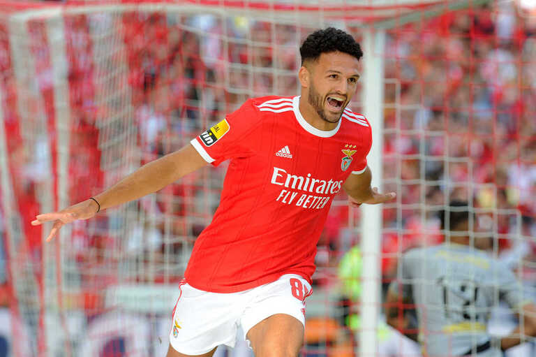
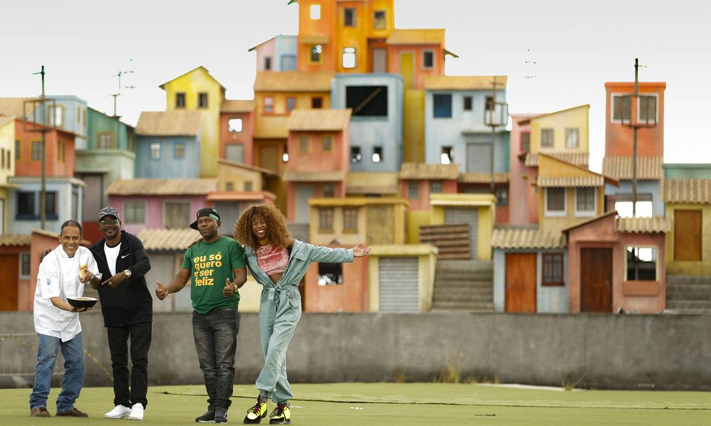
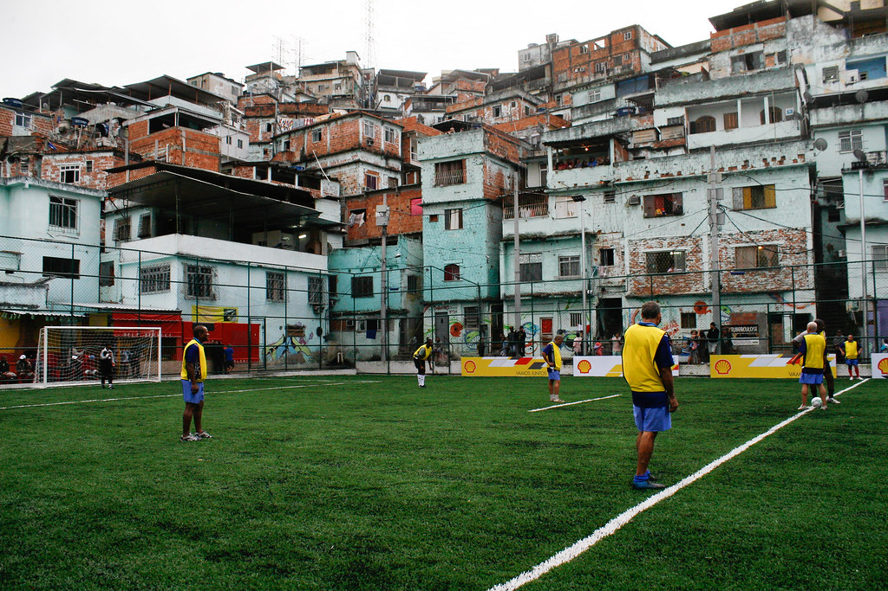
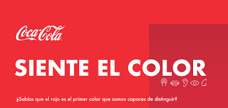

Step, o projeto fundado por Felipe Moura e Anderson Volp, que promete inovar a criação de energia limpa e acessível através de movimentos como o passo e também mudar a realidade nas periferias do país. Felipe Moura é um jogador de futebol criado em uma periferia de São Paulo que busca soluções paraproblemas que ocorreram em sua infância e ainda ocorrem em diversas periferias do Brasil, a falta de luz acessível para várias famílias. Felipe buscava se distrair destes problemas jogando futebol em quadras da periferia, conhecendo assim a sua paixão que em breve iria retirá-lo dessa situação. Anos depois, Felipe é jogador de um dos maiores times do Brasil, sendo inspiração para muitos meninos com histórias parecidas com a sua, até que um dia Felipe recebe um convite para se tornar embaixador em uma universidade de inovação e infraestrutura. Nesta universidade, Felipe conhece Anderson Volp, um estudante da universidade através de um projeto para criar energia limpa através de movimentos comoo passo, Felipe fica fascinado com o projeto e propõea Anderson a execução do projeto em quadras de futebol nas periferias pelo Brasil.

A step tem como objetivo oferecer a oportunidade de uma infância que seja lembradade uma maneira boa pelas crianças e a qualidadede vida em que qualquer pessoa sinta-se confortável, além de abrir oportunidades no esporte para mudarem de vida, assim como Felipe mudou.

Em um mundo movido pela inovação, buscamos extinguir as sombras da falta de energia. Nossa visão é iluminar vidas, energizando sonhos e abrindo caminhos para um futuro brilhante e sustentável. Juntos, somos a chama que transcende a escuridão, guiando o caminho para uma revolução energética que nutre o planeta e eleva a humanidade.
